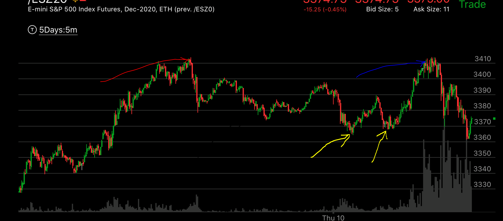
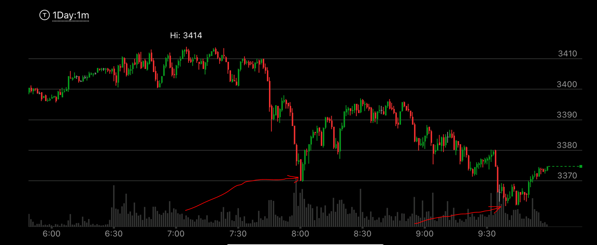

相对强势和新极点的区别
- 相对强势和新极点。都会出现新的极点。那么到底是哪一种呢？相对强势，在拉回后，没有出现完成走势。有时候非常明显。然后再次创新极点。
这时就是相对强势，会大幅回撤。而新极点，则在拉回后，出现了完成走势。这样，它出现新极点，就是一个新的浪了。不会回撤。

图示：红线所指的地方，创新高后，立刻下跌。说明它是很弱势的。未来一定会回到这里。两条黄线所指，是低点。它在第一个
黄线更尖锐，而第二个黄线虽然平坦。但是没有创新低。所以这个不是下跌的相对强势。没有完成走势。结果它再次上涨。在蓝线的位置创新高。虽然只是很小的新高。
但是足以成为上涨的相对强势。从时间上看，两段加起来，这个成为了一个长达20小时的相对强势走势。是非常强大的相对强势，会大跌的。而它在底部应该徘徊很久才对。

图示：8：00的尖锐反弹，和9：30的平坦，似乎是一个相对强势的下跌。说明要大涨。但是，8：00反弹后，出现了一个完成走势。它的第二浪和
第三浪不断加速，在高点走平。本身是个完成走势。这样，9：30的低点就是新低，第一浪，而不是相对强势的第二浪。它在稍微反弹后，再次下跌。创新低。